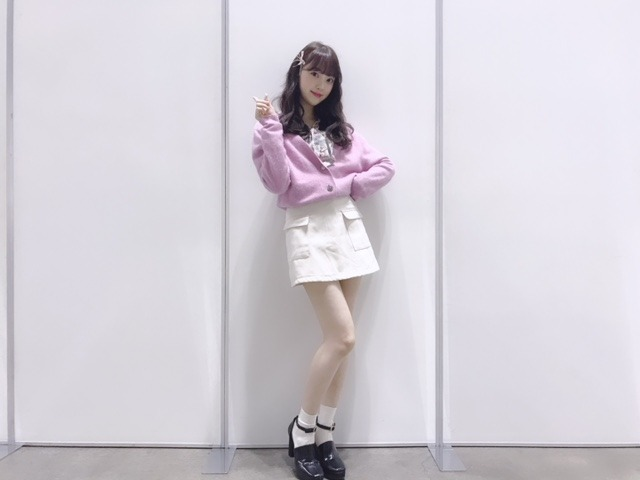
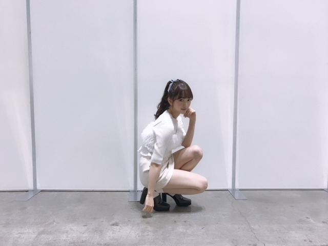
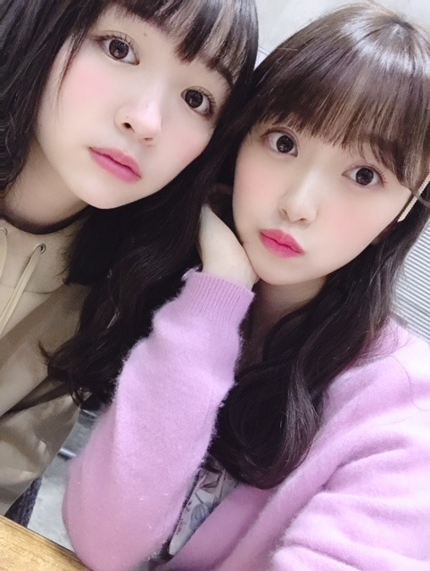
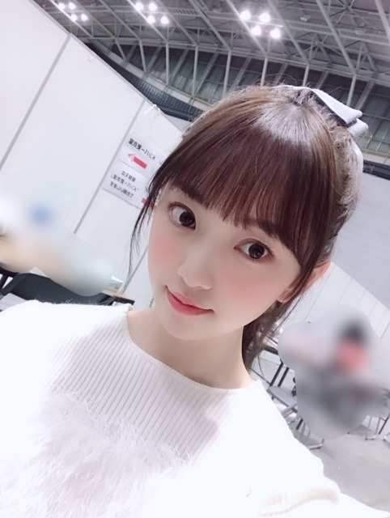

2019/0116Wedいちごいろ
こんにちは☺︎

一昨日の握手会では久しぶりに
三つ編みをしてみました
握手会に来てくださった皆さん、
そしてらじらー！
聴いてくださった皆さん、
ありがとうございました✨

カーディガンは仲良しのメイクさんに
いただいたSNIDELのカーディガン！
紫色好きだからたくさん着てます☺︎
中には韓国で買った花柄のブラウス
スカートと靴はどこのか不明です(-.-;)

中のニットはSNIDELで
重ね着してるキャミはリリーブラウンです〜
握手会で最近お気に入りのコスメを聞かれたので
ちょびっとだけ紹介します
最近は(11月終わりくらいかな)
イプサのアイシャドウ(デザイニングアイシェード05)とファンデーション(ファウンデイションアルティメイト100)とザ・タイムRリップエッセンス
新しく買いました
年末の歌番組は全部イプサのファンデでした！
あとは髪型や衣装に合わせてアイメイクや
リップの色も変えてます

この時の巻き方は
波みたいなウェーブ巻きで
ストレートアイロンで内外で繰り返し波みたいに巻いて毛先をコテで内巻きに1カールさせてます☺︎
カーディガンの色に合わせて同じ色の
フーミー (キラメキアイシャドウスミレ3)も
まぶたに広く塗ってるよ✨
メイクは季節やテーマごとに変えて楽しめるし
自分に合うメイクで整形に頼らず
いかに自分がなりたい自分に
近づけるかだと思っているので
これからも女の子として
メイクは楽しみつつ追求していきたいです✨
もちろんドラマや映画などの映像作品ではほぼすっぴんのナチュラルメイクだったり役にあったメイクをしていくけれど、プライベートや歌番組では自分でしたいメイクをしていきたい！
いまは
CHICCAのチークとリップスティックが
気になっていて...
売り切れが多いので絶賛探し中です☺︎
早く使いたいな〜

今年のメイクキーワードは
#ふわふわチーク
#ぷるツヤ肌
#キラキラまぶた
にするんだ✨✨
女の子寄りのぶろぐになっちゃったけど
男子のみなさん！！
あ、女の子も！
おすすめの"ポジティブになれる"
"感動する"
"勇気付けられる"
いい本があったら教えてください！
今年は映画と漫画だけじゃなく
本も色々読みたい
では☺︎
コメント(535)
ブログありがとう！
私の勇気付けられる本は「ネズミの騎士デスペローの物語」！
小さなハツカネズミが人間のお姫様に恋をし、登場人物それぞれが叶わない思いを抱えながら愛を知っていく物語だよ。
挿絵もかわいいからおすすめ（＾Ｏ＾）
堀ちゃんかわいい(´∀｀*)ザンビ楽しみ
お体に気をつけてね〜応援してるよ！
本ですが、小野不由美さんの「月の影 影の海」がオススメです。分量は多いですが妙齢の女性が主人公で感情移入しやすいと思います。
未央奈推しです！！
今度握手会行きますね
最近読んだ本で〔話すことが怖い。でも、1人にはなりたくないんだ。〕っていう本がグッときました！機会があったら読んでみてね！
らじらー面白かったです。持ち味が存分に発揮されてましたね。箸くんは確かに難しいのでゾンビ設定とかで考えてみたらどうでしょうか。
で、お勧めの本なんですけど
最近面白かったのが「世界史を大きく動かした植物」で、野菜とか身の回りの物に関してだったおかげで僕は苦手な世界史の本で初めて最後まで飽きずに読めました。
あと感動したのがSF恋愛の短編集の「美亜へ贈る真珠」で、ポジティブになれる方法書いてあったのが「迷いの晴れる時間術」って本です。「迷いの…」はポジティブな出来事を記録していくと性格が変わるみたいな内容だったと思います。
消化に時間のかかる不条理に会って落ち込むときも、日々のブログやモバメで見れる堀さんの明るい顔が有れば乗り越えて行けます。最近はおかげさまで番組とかで堀さんを探して見つける速度が上がってきて更に明るい顔に元気づけられやすくなって来ました。いつもありがとうございます。誰かをポジティブにするのって、ただポジティブで居ることの何倍も凄いことなんじゃないかって堀さんを見てると思います。
そういえば親指の爪はもう平気でしょうか？それに近頃はインフルエンザも怖いので喉の乾燥に注意してくださいね。
三つ編みめっちゃかわいい。。。
カーディガンよく似合ってる！
特にパステル系の紫は未央奈が一番よく似合う気がする。
メイク詳しいことはわからないけど、めっちゃ楽しんでますやん！
おすすめの本は…本読まない人だから思い付かない…うー…どうしよう…ごめんね。
可愛い
応援してるよ
握手会は横浜だったので行けませんでしたが、らじらー聴かせていただきましたー！
やっぱり堀ちゃんのラジオがほんとに大好きだ〜と改めて思いました(o^^o)
堀ちゃんという人が好き、声が可愛くてめちゃくちゃ好き、癒される、トークも色んなネタに全力で乗っかってくれる、これで好きにならないわけはないですね( ´ ▽ ` )笑
こんなことはあり得ない話ですが、世界がおかしくなったとして、万が一、もしも僕が堀ちゃんのファンじゃなかったとしても、堀ちゃんの声とお話を聴きたくて毎週聴いていると思います(^^)
それぐらい堀ちゃんのラジオが好きです！(o^^o)
そして、ラジオきっかけで堀ちゃんのファンになっているに違いないです、結局は堀ちゃんのことを好きになるに違いない( ´ ▽ ` )笑
レコメン!も毎週心から楽しみにしていて癒してもらっています、これからもずっと聴き続けます(o^^o)♩
オススメの本ですが、まだ心からこれだ！っていう本には出逢ってないです…今年は僕も色んな本を読んで堀ちゃんにオススメできるものがあればお伝えしたいです( ´ ▽ ` )
ちなみに勇気が出るという点で
「諦めないなら 焦ることはないさ」
というフレーズを自分の中でよく思い返します( ´ ▽ ` )
失敗したり、思うような歩みができなかったりしていても、夢や目標が心にある限りは、1mmずつでも近付いている、そう思うと前向きになれで頑張れます(^^)
中学生ぐらいのときにこのフレーズを聴いたときは、ありきたりだなぁぐらいにしか思えなかったですが、大人になってからしっかり考えると胸にグッときました笑
本ではないので求められてない答えで申し訳ないです( ´ ▽ ` ;)
また何かオススメできることやものがあればお伝えできたらなと思います(o^^o)
ではでは、またコメントさせてくださいー！
握手会は横浜だったので行けませんでしたが、らじらー聴かせていただきましたー！
やっぱり堀ちゃんのラジオがほんとに大好きだ〜と改めて思いました(o^^o)
堀ちゃんという人が好き、声が可愛くてめちゃくちゃ好き、癒される、トークも色んなネタに全力で乗っかってくれる、これで好きにならないわけはないですね( ´ ▽ ` )笑
こんなことはあり得ない話ですが、世界がおかしくなったとして、万が一、もしも僕が堀ちゃんのファンじゃなかったとしても、堀ちゃんの声とお話を聴きたくて毎週聴いていると思います(^^)
それぐらい堀ちゃんのラジオが好きです！(o^^o)
そして、ラジオきっかけで堀ちゃんのファンになっているに違いないです、結局は堀ちゃんのことを好きになるに違いない( ´ ▽ ` )笑
レコメン!も毎週心から楽しみにしていて癒してもらっています、これからもずっと聴き続けます(o^^o)♩
オススメの本ですが、まだ心からこれだ！っていう本には出逢ってないです…今年は僕も色んな本を読んで堀ちゃんにオススメできるものがあればお伝えしたいです( ´ ▽ ` )
ちなみに勇気が出るという点で
「諦めないなら 焦ることはないさ」
というフレーズを自分の中でよく思い返します( ´ ▽ ` )
失敗したり、思うような歩みができなかったりしていても、夢や目標が心にある限りは、1mmずつでも近付いている、そう思うと前向きになれで頑張れます(^^)
中学生ぐらいのときにこのフレーズを聴いたときは、ありきたりだなぁぐらいにしか思えなかったですが、大人になってからしっかり考えると胸にグッときました笑
本ではないので求められてない答えで申し訳ないです( ´ ▽ ` ;)
また何かオススメできることやものがあればお伝えできたらなと思います(o^^o)
ではでは、またコメントさせてくださいー！
のぎー。
ほ、ほ、堀さん？
モバメ。
どうしました？
なにか、辛いことありました？
お腹空いちゃった？減りみおな？(笑)
私も、後悔はたくさんありますよ。
あのとき、ああすればよかった。と。たくさん思います。
でも、あのとき、ああしてよかった。と思うこともたくさんありますよ。
私が昔から、部下や後輩や、監督を務める草野球の野球部のメンバーに言ってきたこと。
「悔しい」気持ちが全ての成長の源。「悔しい」気持ちを大事にしてください。ただし、「悔い」は残してはダメです。
間に「し」という言葉が入るだけで、その意味は変わります。
「悔しい」はやることをやったのに目指す結果を果たせなかったこと。
「悔い」は、もっとやれたのに、やれることをやれなかったこと。
では、２つの意味を分ける、この「し」とはなにか？
その「し」は「志」である。
そこに、「思い」「想い」「気持ち」そして「意志」が込められていたかどうか？
だから、「悔い」はプロセスの問題、「悔しさ」は結果の問題。
結果なんて、全てがうまく行くものではありません。プロセスが大事なんですよね。
プロセスで結果を残すには、「思い」が大事なんですよ。
偉そうに言いましたが、私も、「悔い」はたくさんあります。「悔しい」でも満足はしません。
結構、ひきずるタイプですし。
でも、大事なのはそれをいかに自分の「新しい力」に変えていくかどうか？なんだと思います。
今の堀さんの思いが、どういうところにあるのか？
何を思っているのか？は分かりませんが、少しでも気持ちを和らげる言葉になっていれば嬉しいです。
レコメンで、のぎののをプッシュしていましたねー。
明日楽しみにしていますね。
グレーのパーカー着て聞きますね。
明治エッセルスーパーカップも用意して一緒に自分を甘やかしましょう。
(かりんさんがブログでスゴく推奨していました。紅茶クッキー！)
長々とすいませんでした。
のぎー。
再登場です。
私、ジブリが長年好きなんですけどね。
堀さんもたまにジブリに触れてますが。
先日、テレビで「耳をすませば」やってましたね。
久しぶりに観ました。
堀さんのブログ、モバメを見て、なんとなく今の堀さんの迷い、思い(勝手な推察ですが)とオーバーラップしました。
観たことなければ、一度観ていただいてはいかがかな？と思いまして。
好きなもみじ饅頭でも食べながら。(笑)
ネタバレするといけないので、詳しくは言いませんが、
自分探しに焦る主人公の「雫」が、おじいさんに優しく諭されるシーンとその言葉。。
既におじさんの私にも常に心に響きます。
前に進むこと、階段を１段でもあがろうとすること、その気持ちはいくつになっても大切だと思います。
昨日と同じ今日は絶対に無いのですからね。
「君らしさ」を大事にね。
のぎー。
再々登場です。
子供の頃読んだ「ドラえもん」の「じーんマイク」という回で、のび太くんがテストで０点をとってクヨクヨしていると、先生がのび太くんに言った言葉です。
「０点をとったことは残念なことだが、過ぎたことをくよくよしても仕方ないだろう。」
「目が前向きについているのはなぜだと思う？」
「前へ前へ進むためだ」
「ふりかえらないで、常に明日を目指して頑張りなさい」
ポジティブになりました？
ご紹介する本が「ドラえもん」って。。。(笑)
でも、あの漫画は深いですよ。
子供の頃では気づけなかった色んな裏に潜む意図や狙いが見えてくると思いますよ。
改めて、大人目線で読んで見ると面白いかもしれませんよ。
それでは、4月以来久々になる明日ののぎのの。でお会いしましょう。一方的にですが。(笑)
コスメ教えてくれるの嬉しい〜いつも参考にしてます
ほりちゃん大好き♡
めっちゃ感動するし元気もらえるよ！
バスケ漫画ね！
のぎー。
私はスイカ泥棒ではありません。
なんだか、今日は動揺中で、居ても立ってもいられず、再々々登場です。
モバメの言葉を受けて、私の大好きな槇原敬之さんの曲で、私が20代の頃、辛いときに聴いていた曲の歌詞を贈ります。
私は、この曲を聴いて、26歳のときに、照れもなくスノボーを始めたり、「今さら？」ということにチャレンジしました。
カラオケで自分で歌って、自分で涙ぐんだりしたものです...。
挑戦に遅いなんてことはありません。
堀さんの思いは、私ごときにわかりませんが、やらずに後悔するなら、やって後悔した方がいいと思っています。
だから、「後悔」は悪いことだけではありませんよ。
東京DAYS
槇原敬之
星空に口笛よひびけ
すばらしき毎日
例えば最初に自転車に
乗れた日を覚えていれば
新しいコトをはじめるやつを
だれも笑えやしないはず
24歳の夏にはじめて
てれもなくスケボー抱えて
河べり坂道すり傷なめる
僕に誇りを持ってる
東京DAYS何かいいこと
ないかとぐちをこぼしかけて
遊び場さがすようになったら
最後と言葉をのんだ
家具屋でみつけた緑色の
1人がけの大きないす
自分の部屋に置くとしたら
どこがいいか考えてた
そうしていつか1人分を
自然に選んでることに
少し淋しくもなったりしたけど
悪い気分じゃないんだよ
東京DAYS愛する人が
いつか現れたら僕のひざの
上にのっけてあげればいい
その先はそれから
子供が生まれたと友人が
写真付きのハガキをよこした
勇気をくれるモノはいつでも
愛を守る人達の強さ
東京DAYS
半透明のゴミ袋を抱えながら
星空に口笛よひびけ
すばらしき毎日
今日も吠えるとなりの犬に
本気でどなり返す
すばらしき毎日
個人的にはやっぱりかずみんのトラペジウムですかね
主人公の女の子に元気をもらえました！
はやく全握行きたいです〜
今年も全力で応援します
おすすめの本は七月隆文さんの天使は奇跡を希うと君にさよならを言わないがおすすめです、どちらも感動するので機会があればぜひ読んでみてください
今日もモバメありがとう！たまに来る熱い気持ちのモバメを読むと、胸が熱くなります！！
他にも沢山作品はあるけど未央奈ちゃんの好きな作品のひとつになると思います！
握手会、らじらー！お疲れ様でした(*´꒳`*)
三つ編み似合っとる（╹◡╹）♡
私服も可愛かですねー
メイクとか髪型とか色々楽しんでて良きですね♪(๑ᴖ◡ᴖ๑)♪
漫画は読むけど本は読んどりませぬ(´-ω-`)
大切なのは距離感、
大切なのは心、
です！
『わかります、でもそれには少し、、、「心」がない』
アイ・ロボットのサニーは
格好良い。
めちゃくちゃ参考になりました！！
デパコスまだ買ったことないから挑戦してみます笑
今日ビッグサイト行くよ‼️今年初握手会楽しみ
(ケンケン)
今日はちょっと寒いですね～
ポジティブになれる本を紹介したいけど、
最近あまり本を読んでないから残念です...
でも、時間は前にしか進まないから、
とにかく今は前向きに進むのみですよね☆
未来は、今以上になると信じる事ですよ♡
ファンからも沢山の愛を受け取って下さい♪
Stand by you☺
おすすめです！
応援してます！
お久しぶりです
いつ以来ぶりか忘れたけど(*´∀｀)ゞ
( ﾟ∀ﾟ)=◯☆)ﾟoﾟ) たしかだいぶ前にコメしたはず
そういえば、まるっと！ぎふ、観ました
岐阜に行きたくなりました(笑)
行ったことないからどんなとこなんだろう？とは思ってたんですよ
織田信長が稲葉山城を攻略した後、新たに岐阜城を築き、
天下統一の足掛かりとした土地ということは
知ってたんですけど(*´∀｀)ゞ
( ﾟ∀ﾟ)=◯☆)ﾟoﾟ) ただの歴史好きです
でもやさしい町ってことはわかりました
それからたしか長良川の鵜飼も有名でしたね
岐阜のおかゆ…食べてみたいなあ
長良川で取れた鮎の塩焼きを食べつつ…(*´﹃｀*)
お、オススメのポジティブになれる本ですか…
それか感動する、勇気づけられる本…
よーし、いっぱい書いちゃおﾌﾞﾌｯ∵(´ε(○＝(ﾟ∀ﾟ )
それじゃ、分けて書いてみます(汗)
・ポジティブになれる本
「采配」落合博満
→少し前のブログでみおなちゃんが、いろんな職業の人の
その職についた話を聞くのが好きって書いてたのと、
まるっと！ぎふで、実力者になる、って書いてたので
いろんな分野の実力者の著書メインで選んでみました。
日本プロ野球史上最多、3度の三冠王になった人…
ただ考え方は至って合理的かつシンプル。
1日の仕事を精一杯やった後、ご飯と味噌汁が食べられればそれでいい、
みたいなことを書いていて、みおなちゃんとちょっと似てるなって思いました。
こうでなければならない、という制約が多い世の中にあって、
彼のような考え方ができる人は貴重な気がします。
そういえば落合さんはみおなちゃんの地元の中日ドラゴンズの元監督でしたね
そんな点でもオススメです(笑)
・感動する本
「夜回り先生」水谷修
→感動…というか色々考えさせる本です。夜間高校の先生が夜回り(繁華街のパトロール、しかも自主的に)をしながら出会った生徒たちとの記録。
せつない話もあるけれど、彼のようなやさしさがどれだけ多くの助けとなったんだろうと考えると感動というか心が大きく動かされる感じです。
自分はNHKの番組見てそれから本を読む、って感じだったんですけど、
彼の話は不思議と人を引き込む力があると思いました。
他にも続編出してるので興味があればぜひ。
・勇気づけられる本
「熱く生きる」天野篤
→今年は天皇陛下の譲位によりついに年号が変わる年ですよね。
今の天皇陛下は2012年に心臓バイパス手術を受けられたんですけど、その時の執刀医が天野さんでした。
題名の通りの人です。ただ彼は元々大学受験の総合偏差値50未満で3浪して医学部に合格するという人。
受験生時代はラジオ、麻雀、パチンコにはまっていたとか(爆)
そんな人がなぜ天皇陛下の執刀医を任されることになったのか…。
3冊ともそれほど分量多くないと思うのでちょっとした空き時間に読むにはちょうどいいかなと思います。
ほんとはすんごい分厚いマイナーな登場人物目白押しの大長編歴史小説を
オススメしようかなと思ってたんですけど(*´∀｀)ゞ
( ﾟ∀ﾟ)=◯☆)ﾟoﾟ) ただの歴史好きです(2回目)
そういえば遅くなりましたがあけましておめでとうございます！
今年がみおなちゃんにとってステキな一年になりますように
本は湊かなえさんおすすめ！告白とか？ドキッとする…
漫画は約束のネバーランド面白そうよー恋愛じゃないけどねー
いつも応援してます(*´꒳`*)
今日の握手会、３部に参加したよ！
初めて個握きました！
ホットギミック楽しみにしてるね！
と伝えました！！
私服初めて見れた～！
可愛かった～❤️ありがとうね！
また行くね！
今日はお疲れ様でした♪
鳥居坂登って。
友達はもうお土産をたくさん買っていましたから，
やはり興奮の要素がたくさんあったんだと思います。
私も，ＳＭＥさんの努力が見られて，自分もがんばろうという思いだけは芽生えました。
外国の方とかご高齢の方もいらっしゃっていましたし，
女性も多かったですね。
引き続きがんばってください。
今日は、握手会3部に参加させていただきました。今日は、近くでお目にかかれて、うれしいです。♥
ブログの「FUJIBAKAMA」の感想を伝えました。
未央奈ちゃん、落ち着いた口調で「ありがとう！ 大丈夫です！」と。
私服姿、かわいく、初めて観れたので感激です。♥
お疲れ様です。ゆっくり休んでくださいね。♥
ありがとう。
自分のこれからの目標は新境地を開拓することです。
欲張って全部を手に入れたいです笑
これをモットーに頑張りたいと思います！
おすすめの本は『あずかりやさん』とか『家族シアター』とかです(^^)
是非読んでみてください。
自分はAIや自己啓発本を読んで、将来を考えたり、他の人の考えを知るのが好きです笑笑
よく変人だって言われます笑笑
今日個握でみおなかな髪の毛青でBTSのテテと同じ色って
言ってもらったみあいです
髪の毛めちゃ青だったから覚えてるかな？？
みおなかわいすぎた２月もいくね
本好きな私のおすすめは、
原田マハさんの 生きるぼくら 。
元気が出てあったかくなる本です。
前回はブログの感想を書きました！
時間→「No.363 2019年1月17日 01:09」
こないだ17日に、僕が小1の時から15年4ヶ月共に過ごした愛犬のラッキー君が天国へ旅立ちました！1～2年ぐらい前から白内障が原因でふらつきながら歩くようになったり、うんちをしても踏んで周りを汚してしまったり、痴呆症が原因で隅っこや隙間に頭を突っ込んだりする症状がありました！最後の方は、散歩も途中で抱っこして帰ってくる事もありました！でも、ご飯だけは亡くなる前日まで食べていました！夜鳴きも割りとあり、外へ見に行くと隅っこに頭を突っ込んでいたり、最後の方は思うように体を動かせなかったので上手くおしっこをする事が出来ず体を濡らしている事もありました！亡くなる当日の朝、お父さんが見に行くと体が伸びてビクッと震えていたので午前中に病院へ連れていきました！脱水症状による障害が怖いため点滴をしてもらい、会計の時にモニターにある文章が見えて、少し見て泣きそうになったので僕は隣にいた犬を見ていました！すると、その犬もこっちを見てきてまた泣きそうになりました！家へ帰り少し寝て、お父さんは昼から仕事なので準備をして見に行ったら亡くなっていました！僕も一緒に見に行って、お父さんが家を出た後に泣き崩れてしまいました！
・僕は勤務変更で偶然休み！(本当良かった！)
・お父さんは昼から仕事の場合だと、だいたい
午前に仕事が付くのに、その日は偶然無し！
・お母さんは仕事でしたが、翌日の火葬に行き
お骨を拾ったのはお母さんだけ！
亡くなった当日の夜、ラッキー君の前で3人で大泣きしました！火葬当日の朝、3人で拝み、僕は仕事だったので、家を出て駅で待ってたら犬の鳴き声がして、一生懸命探してもどちらのホームにもいませんでした！それをお母さんに言ったら、ネットを見たいたら同じ体験をした人が結構いたそうでビックリしました！
今思うと、スマホばかりいじっていたのを後悔しています！全部の行動が可愛く思えます！
お父さんもうんちで周りを汚してしまった後の掃除をする時に、例え忙しくてもキツく言わず優しくしてあげれたらなと言っていました！
小さい時のビデオや写真を見ていると、自然と涙が出てきます！なんか、毎日泣いて、ため息ばかりついてます！想像以上に落ち込み、心にぽっかり穴が開く意味がやっと分かりました！
最後に、病院の会計のモニターの文章ですが、調べると「犬の十戒」でした！ご存知ですか？これは犬を迎えた時、飼う時に誓いたい言葉でこの言葉を読んでまた泣いちゃいました！
この言葉を亡くなった当日に知るなんて・・・
もっと早く知りたかったな～(涙)
これからは、新しく買った割りと似ている犬の人形と一緒に過ごそうと思います！
ありがとう！15年とちょっと楽しかったよ(涙)
ラッキー、虹の橋で待っててね～！
ここまで読んで頂きありがとうございました！
毎日お仕事お疲れ様です！体調にはくれぐれも気を付けて頑張ってくださいね！
おやすみおな～！


久石譲さんの「感動を作れますか？」
ですかね。
久石さんの視点を少し学べるような気がします。
新しい本でも良いのかもしれませんが。
あと
「のび太」という生きかた。
気楽に読めます。